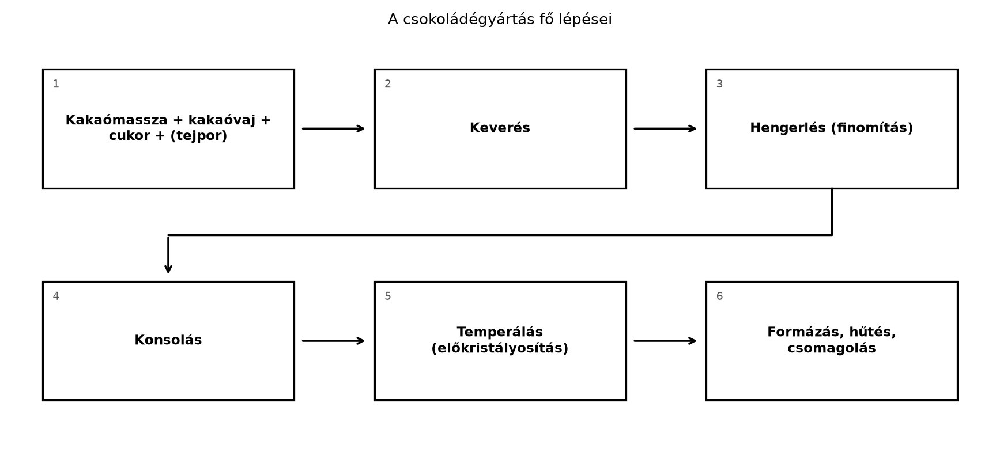
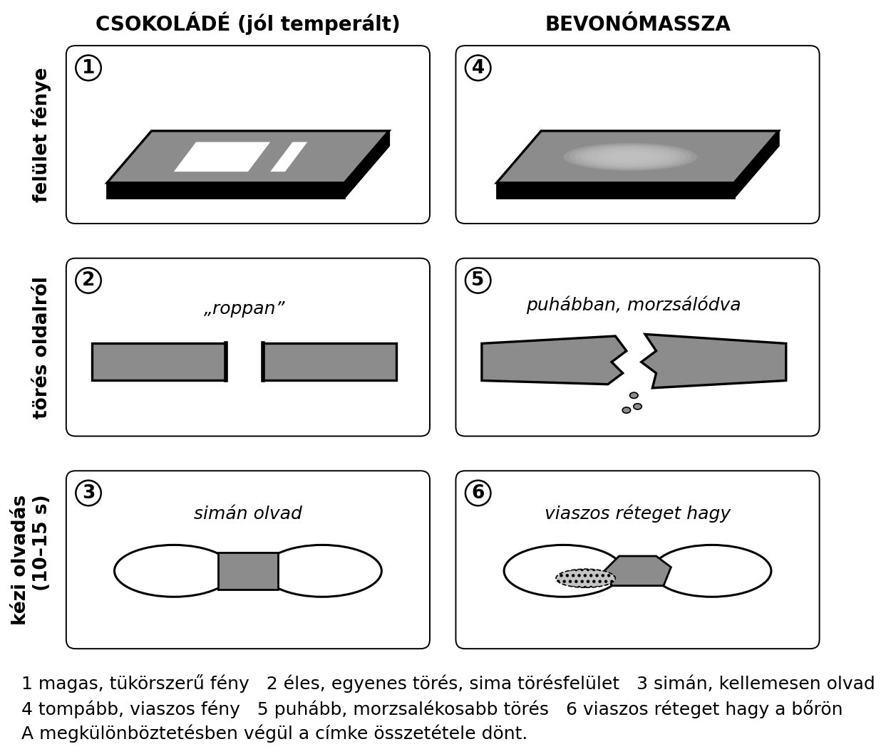

A cukrászműhelyben két doboz is állhat a polcon: az egyik „csokoládé”, a másik „bevonómassza”. Reggel a bonbonokhoz drága, fényes csokoládét szeretnénk használni, délután viszont nagy tortalapok bevonásához olcsóbb, egyszerűbben használható anyagot keresünk. Ha rosszul választunk, a bonbon puhán roppan, a tortabevonat foltos lesz, és a vendég joggal kérdezi: „Ez miért nem olyan, mint tegnap?”
A válasz a csokoládé és a bevonómassza összetételében, viselkedésében és felhasználási céljában van. Ebben az alfejezetben ezt a különbséget tanuljuk meg, és érzékszervi vizsgálattal is összehasonlítjuk a két termékcsoportot.
Képzelj el két kész tortaszelet-szélt egymás mellett. Az első bevonata magas fényű, törésekor éles hanggal roppan, a szájban hűvösen, olvadva szétterül, és hosszú kakaós utóízt hagy. A második bevonata tompább fényű, törése puhább, a szájban gyorsabban, kissé viaszosan olvad, íze édesebb és kevésbé összetett. Az első nagy valószínűséggel valódi csokoládé, a második bevonómassza. A különbség nem hiba, hanem két eltérő alapanyag: más célra, más technológiával készülnek.
Definíció. Csokoládé. A csokoládé olyan élelmiszer, amely kakaótermékekből (kakaómassza, kakaóvaj, kakaópor) és cukorból, adott típusnál tejtermékből készül, és a jelölés szempontjából meghatározott minimális kakaószárazanyag-, kakaóvaj- és tejszárazanyag-tartalmat ér el. A csokoládé megnevezését a kakaó- és csokoládétermékekre vonatkozó uniós irányelv (2000/36/EK) és a hazai átültetése szabályozza (ellenőrizendő: hatályos kakaó- és csokoládétermék előírás). A csokoládé jellemző zsiradéka a kakaóvaj.
Definíció. Kuvertűr (bevonócsokoládé). A kuvertűr (francia: couverture) magas kakaóvaj-tartalmú, vékonyan folyó, bevonásra szánt csokoládé. A magas kakaóvaj-tartalom miatt jól temperálható, vékony, fényes, roppanó bevonatot ad.
Definíció. Bevonómassza (kakaós bevonómassza). A bevonómassza (angolul compound coating) olyan bevonó anyag, amelyben a kakaóvaj egészét vagy nagy részét növényi zsiradék (például pálmamag-, kókusz- vagy más növényi olaj alapú zsiradék) helyettesíti. A bevonómassza nem felel meg a „csokoládé” megnevezés feltételeinek, ezért „bevonó massza”, „kakaós bevonómassza” vagy hasonló néven forgalmazzák. Nem igényel temperálást.
Definíció. Viszkozitás. A viszkozitás a folyadék belső súrlódása, vagyis az az ellenállás, amelyet a folyadék a folyással szemben kifejt. A cukrászatban a csokoládé vagy bevonómassza viszkozitásán azt értjük, hogy milyen vastagon vagy vékonyan folyik. Minél kisebb a viszkozitás, annál vékonyabb, egyenletesebb bevonat készíthető.
Szabály. Csokoládé és bevonómassza megkülönböztetése. A termék akkor nevezhető csokoládénak (ét-, tej- vagy fehércsokoládénak), ha a hatályos előírásban rögzített minimális összetételt teljesíti, és a kakaóvaj a jellemző zsiradék. Ha a kakaóvajat nagyrészt vagy egészben idegen zsiradék helyettesíti, a termék bevonómassza, és nem jelölhető csokoládéként. A pontos határértékeket minden gyártmánylapnál ellenőrizni kell (ellenőrizendő: 2000/36/EK irányelv és Magyar Élelmiszerkönyv vonatkozó előírása, gyártói specifikáció).
A csokoládégyártás a cukrászüzemben késztermék, de a bevonó anyagok kiválasztásához ismerni kell, mi történik a masszával a gyártás során.
A gyártási lépések után a valódi csokoládét temperálják (előkristályosítják), majd formázzák vagy hűtik. A temperálás részletes magyarázatát az A csokoládé temperálása: kristályszerkezet és temperálási görbe alfejezetben tárgyaljuk; itt csak a csokoládé és bevonómassza közötti különbséget hangsúlyozzuk.

A folyamatábrán látható, hogy a csokoládégyártás záró szakasza előtt a massza még nem stabil kristályformájú. A kakaóvaj többféle kristálymódosulatban dermedhet, és a fényes, roppanó bevonathoz a kívánt módosulatot kell kialakítani. A bevonómassza ezt a lépést nem igényli, mert zsiradékja más, stabilan dermedő típus.
A csokoládé típusai a felhasznált kakaótermékek és tejtermékek arányában és jelenlétében különböznek.
Étcsokoládé. Kakaómassza, kakaóvaj, cukor, adott esetben kakaópor és kevés lecitin. Nem tartalmaz tejport. Jellemzője a magas kakaószárazanyag-tartalom és a keserédes, telt kakaóíz. A mindennapi gyakorlatban a 70%-os, 85%-os felirat a kakaószárazanyag-tartalomra utal (a pontos jelölési szabályt ellenőrizni kell).
Tejcsokoládé. Kakaómassza, kakaóvaj, cukor, tejpor vagy tejszínpor, lecitin. Világosabb barnább színű, tejesen édes, lágyabb ízű, alacsonyabb kakaószárazanyag-tartalommal, mint az étcsokoládé.
Fehércsokoládé. Kakaóvaj, cukor, tejpor, lecitin, de nem tartalmaz kakaómasszát, ezért színe halvány sárgásfehér, íze tejes-vaníliás, kakaóíze nincs. A fehércsokoládé kakaóvaj-tartalma miatt valódi csokoládé, de kakaószárazanyagot csak a kakaóvaj formájában tartalmaz.
Megjegyzés. Százalékok. A csomagoláson feltüntetett százalék általában a kakaószárazanyag-tartalom, de a fogyasztói tájékoztatás részleteit a hatályos jelölési rendelet (1169/2011/EU) és a kakaó- és csokoládétermékekre vonatkozó előírás szabályozza. A pontos számértékeket mindig gyártói címkéről és az előírásból ellenőrizzük (ellenőrizendő: jelölési szabályok és konkrét termékcímkék).
| Tulajdonság | Étcsokoládé | Tejcsokoládé | Fehércsokoládé | Kuvertűr (bevonócsokoládé) | Bevonómassza (compound) |
|---|---|---|---|---|---|
| Fő kakaó-összetevő | kakaómassza, kakaóvaj | kakaómassza, kakaóvaj, tejpor | kakaóvaj | kakaómassza, kakaóvaj | kakaópor, növényi zsiradék |
| Jellemző zsiradék | kakaóvaj | kakaóvaj | kakaóvaj | kakaóvaj | kakaóvaj-helyettesítő növényi zsiradék |
| Szín | sötétbarna | világosabb barna | sárgásfehér | sötét vagy tejes | barna, kevésbé mély |
| Temperálás | szükséges | szükséges | szükséges | szükséges | nem szükséges |
| Jellemző felhasználás | bonbon, dísz, bevonat | bonbon, bevonat, krém | díszítés, ganache | bonbon, vékony bevonat | tortabevonat, kekszdíszítés |
A táblázatban a kuvertűr külön sorban szerepel, mert a kuvertűr nem önálló csokoládéfajta, hanem az ét-, tej- vagy fehércsokoládé magas kakaóvaj-tartalmú, bevonásra optimalizált változata.
Jogszabály. A csokoládé és bevonómassza megnevezése. Az uniós kakaó- és csokoládétermék irányelv (2000/36/EK) és a magyar élelmiszerkönyvi előírás rögzíti, mely termékek nevezhetők csokoládénak, tejcsokoládénak, fehércsokoládénak, és milyen minimális összetételt kell teljesíteniük. A bevonómassza, amelyben a kakaóvajat más zsiradék helyettesíti, nem használhatja a „csokoládé” megnevezést (ellenőrizendő: hatályos előírás pontos megnevezési és összetételi követelményei). A gyakorlatban a csomagoláson ezért „bevonó massza”, „kakaós bevonó” vagy hasonló felirat szerepel.
A tanuláshoz használt összetételi minimumok (tájékoztató; ellenőrizendő: 2000/36/EK irányelv I. melléklete, Magyar Élelmiszerkönyv):
| Termék | Összetételi minimum (a termék tömegének %-ában) |
|---|---|
| Étcsokoládé | összes kakaó-szárazanyag ≥ 35%, ebből kakaóvaj ≥ 18% és zsírmentes kakaó-szárazanyag ≥ 14% |
| Tejcsokoládé | összes kakaó-szárazanyag ≥ 25%, zsírmentes kakaó-szárazanyag ≥ 2,5%, tejszárazanyag ≥ 14%, tejzsír ≥ 3,5%, összes zsír (kakaóvaj + tejzsír) ≥ 25% |
| Fehércsokoládé | kakaóvaj ≥ 20%, tejszárazanyag ≥ 14%, tejzsír ≥ 3,5% |
| Étkuvertűr | összes kakaó-szárazanyag ≥ 35%, kakaóvaj ≥ 31%, zsírmentes kakaó-szárazanyag ≥ 2,5% |
A tejcsokoládé tehát nem a „18% kakaóvaj” szabályt követi: ott az összes zsír (kakaóvaj és tejzsír együtt) és a tejszárazanyag a meghatározó.
A kuvertűr (bevonócsokoládé) annyiban különbözik az átlagos táblacsokoládétól, hogy kakaóvaj-tartalma magasabb, ezért temperálás után hígabban folyik, és vékonyabb bevonatot képez. A bonbonkészítésben a vékony, roppanó csokoládéhéjhoz általában kuvertűrt használunk.
A csokoládé viszkozitása függ:
Szabály. Kuvertűr és viszkozitás a bevonásban. A bevonásra szánt kuvertűr viszkozitása a temperálás után alacsony, így a felesleg lecsorog, és egyenletes, vékony réteg marad. A túl sűrű massza vastag, egyenetlen bevonatot ad, a túl híg massza lecsorog, és nem képez védőréteget. A gyártói adatlap megadja a javasolt felhasználási viszkozitást és hőmérsékletet (ellenőrizendő: gyártói adatlap).
A bevonómassza (compound coating) a kakaóvaj helyett vagy mellett kakaóvaj-helyettesítő növényi zsiradékot tartalmaz. Ez lehet:
A bevonómassza előnye, hogy nem igényel temperálást, mert a helyettesítő zsiradék temperálás nélkül is stabil kristályformában dermed, és egyenletes, elfogadható fényű bevonatot ad; a valódi, temperált csokoládé fényét és roppanását azonban nem éri el. Hátránya, hogy íze kevésbé kakaós, a kakaóvajhoz képest alacsonyabb olvadáspontú lehet, és a csokoládénál gyorsabban olvad a kézben vagy a szájban.
Definíció. Laurin és nem laurin zsiradék. A laurin típusú zsiradékok fő zsírsavösszetevője a laurinsav, amely a pálmamag- és kókuszolajban található. A nem laurin típusú zsiradékok ettől eltérő zsírsavösszetételűek, jellemzően sztearinsavban és palmitinsavban gazdagok. A cukrászati gyakorlatban a kakaóvaj-helyettesítők csoportosítását a zsiradék gyártója adja meg (ellenőrizendő: gyártói adatlap és szakirodalom).
Tilos. Bevonómassza csokoládénak nevezése. A bevonómasszát nem jelölhetjük „csokoládé” néven, sem az étlapon, sem a címkén. A fogyasztó megtévesztése jogi következménnyel jár. Ha a termékben lévő bevonó anyag nem csokoládé, a megnevezésben ezt jelezni kell, például „kakaós bevonómassza” (ellenőrizendő: hatályos jelölési előírás).
Az alábbi gyakorlatban csokoládé és bevonómassza mintákat hasonlítunk össze érzékszervi szempontok szerint. Az érzékszervi vizsgálat célja, hogy felismerjük a különbséget fény, törés, olvadás és íz alapján.
Cél. Megállapítani, melyik minta valódi csokoládé és melyik bevonómassza, valamint rögzíteni az érzékszervi különbségeket.
Eszközök és anyagok. Két vagy három minta (étcsokoládé, tejcsokoládé, kakaós bevonómassza), tiszta kés vagy törőeszköz, fehér tányér, kóstolókanál vagy kis darabok, szobahőmérsékletű víz vagy alma a semlegesítéshez, értékelőlap, toll.
Higiénia. A munkába állás higiéniai rendje. Munkaruha, hajháló, ékszer le, kézmosás, tiszta felület és eszközök. A kóstoláshoz külön kis kanalat vagy fogpiszkálót használj. A mintákat tiszta edényen, tiszta kézzel kezeld. A csokoládét soha ne nyalogasd, ne érjen a nyálad a közös mintához. Allergén figyelmeztetés: a csokoládé általában tejet (tej- és fehércsokoládé), szóját (lecitin) tartalmaz, és nyomokban dióféléket is. Allergiás résztvevő a vizsgálatot csak az összetevők ellenőrzése után végezheti.
Biztonsági korlát. Kóstolásos vizsgálatnál az allergiás és intoleráns személyek védelme elsődleges. A vizsgálat nem helyettesíti az összetevőlista ellenőrzését. Késsel töréskor figyelj a vágásveszélyre.
A vizsgálat lépései számozottan.

Az ábra bal oszlopa a csokoládét, jobb oszlopa a bevonómasszát mutatja. A csokoládé felülete tükörszerűen fényes (1), élesen, egyenesen, roppanva törik (2), és kézben simán olvad (3); a bevonómassza fénye tompább, viaszos (4), puhábban, morzsálódva törik (5), és viaszos réteget hagy a bőrön (6). Az érzékszervi jelek csak tájékoztatnak: a döntést a címke összetétele adja.
Ellenőrzési pontok. A fény, törés és olvadás különbsége egyértelműen megfigyelhető. Az ízben a csokoládé telt, a bevonómassza lapos. Az értékelésnél mindenki ugyanazt a szempontsort használja.
Tipikus hibák a vizsgálatban. A mintákat nem szobahőmérsékleten vizsgáljuk (hideg csokoládé nem olvad, meleg bevonómassza szétkenődik). A vizsgáló azonosítja a mintát a csomagolásról, így nem vakteszt. Kóstolás után nem semlegesíti az ízlelőbimbókat, ezért a második minta íze torzul.
Takarítás és dokumentálás. A vizsgálat végén az eszközöket elmosogatjuk, a felületet fertőtlenítjük. Az értékelőlapot dátummal, a minta jelével és az eredménnyel megőrizzük.
A csokoládék összetételét gyakran százalékban adjuk meg. A számításokhoz az ellenőrzött minimumértékeket tanulási példaként használjuk, és mindig ellenőrizzük a hatályos előírást.
1. példa (A szint). Egy 100 g-os étcsokoládéban a kakaószárazanyag-tartalom 70%, ebből kakaóvaj 40 g. Megfelel-e az étcsokoládé minimumának?
Adott: , kakaószárazanyag , kakaóvaj . Az étcsokoládé tanulási minimuma: kakaószárazanyag , kakaóvaj (ellenőrizendő: hatályos előírás).
Keresett: megfelelőség.
Számítás:
Mivel és , a termék megfelel az étcsokoládéra vonatkozó tanulási minimumoknak. ∎
2. példa (B szint). Egy 100 g bevonómassza összetétele: kakaópor 12 g, növényi zsiradék 33 g, cukor 54 g, lecitin 1 g. Hány százalék a kakaószárazanyag, és miért nem nevezhető csokoládénak?
Számítás: A kakaószárazanyag 12%, ami elmarad az étcsokoládé 35%-os tanulási minimumától (ellenőrizendő). Ráadásul a jellemző zsiradék nem kakaóvaj, hanem növényi zsiradék, így a termék nem csokoládé, hanem bevonómassza. ∎
A csokoládé és a bevonómassza minőségét az alábbi szempontok szerint ellenőrizzük.
Csokoládé (jól temperált). Külső: magas fény, egyenletes szín, nincs fehér folt vagy zsírkiütés. Törés: éles, roppanó, nem morzsalékos. Szájban olvadás: sima, hűvös, teljesen elolvad. Íz: telt kakaóíz, a fajtának megfelelő édesség. Illat: kakaós, tejes, vaníliás a típus szerint.
Bevonómassza. Külső: egyenletes, de tompább fény. Törés: puhább, de ne legyen ragacsos. Szájban olvadás: gyorsabb, viaszosabb. Íz: kakaós, de kevésbé összetett. Illat: édeskés, kakaós.
Hiba és javítás. A csokoládénál a fehér folt (zsírvirágzás) a nem megfelelő temperálás vagy tárolási hőmérséklet jele. A bevonómasszánál a ragacsos felület a túl magas hőmérsékleten való tárolás következménye.
Egy cukrászda esküvői tortához két bevonót rendelt: drága étkuvertűrt és olcsóbb kakaós bevonómasszát. A szakács a torta áthúzásához a drága étkuvertűrt választotta, de nem temperálta, mert sietett. A bevonat a hűtőből kivéve fényesnek tűnt, de ahogy a tálalóban felmelegedett, zsíros, fehér foltos lett, és a szeleteknél a bevonat nem roppant. A hibát az esküvő előtt észrevették. A javítás: a torta bevonatát lekaparták, és temperált kuvertűrrel újrahúzták, vagy a következő tortához bevonómasszát használtak, amely temperálás nélkül is fényes maradt. A tanulság: a csokoládé valódi minősége temperálás nélkül nem érvényesül; ha nincs idő vagy lehetőség temperálni, a bevonómassza a megfelelő választás.
1. feladat (A). Sorolj fel három különbséget étcsokoládé és tejcsokoládé között.
2. feladat (A). Egy 100 g-os tejcsokoládéban az összes kakaó-szárazanyag 30 g, a tejszárazanyag 18 g, ebből a tejzsír 4 g, a kakaóvaj 15 g. Melyik tanulási minimumot nem teljesíti, ha a tejcsokoládé minimuma: összes kakaó-szárazanyag 25%, tejszárazanyag 14%, tejzsír 3,5%, összes zsír (kakaóvaj + tejzsír) 25%? (ellenőrizendő: 2000/36/EK, hatályos előírás)
3. feladat (B). Egy bevonómassza 100 g-jában 10 g kakaópor, 30 g növényi zsiradék, 59 g cukor, 1 g lecitin van. Számítsd ki a zsiradék százalékos arányát, és hasonlítsd össze egy 32% kakaóvajat tartalmazó kuvertűrrel.
4. feladat (B). Egy bonbonhoz 70%-os étcsokoládét szeretnénk használni. A gyártó adatlapja szerint a csokoládé kakaóvaj-tartalma 40%. Hány gramm kakaóvaj van 250 g csokoládéban?
5. feladat (C). Egy cukrász kapott egy doboz fehér bevonó anyagot, amelyen nem volt címke. Érzékszervi vizsgálattal próbáld azonosítani: a darab puhán törik, gyorsan, viaszosan olvad, íze édes, tejes, de nincs kakaó íz. Mi lehet ez, és milyen további vizsgálatot javasolsz?
6. feladat (D). Tervezz bonbonhéjat kétféle anyagból: egyik az étkuvertűr, másik az ét bevonómassza. Írd le mindkettőhöz, hogy szükséges-e temperálás, milyen lesz a héj fénye és roppanása, és melyiket választanád prémium bonbonhoz, melyiket nagyüzemi, gyors termeléshez. Indokold a választásodat.
Önellenőrzés – válaszok.
1. feladat (A). Az étcsokoládé sötétebb, kakaószárazanyag-tartalma magasabb, nem tartalmaz tejport; a tejcsokoládé világosabb, tejet tartalmaz, édesebb, kakaószárazanyag-tartalma alacsonyabb.
2. feladat (A). Az összes zsír , ami kevesebb, mint a 25%-os tanulási minimum, ezért a termék nem felel meg. A kakaó-szárazanyag , a tejszárazanyag és a tejzsír teljesül, tehát az összes zsír a nem teljesülő érték. (ellenőrizendő: hatályos érték)
3. feladat (B). A bevonómassza zsiradéka , a kuvertűré . Látszólag közel vannak, de a bevonómassza zsiradéka növényi olaj, a kuvertűr zsiradéka kakaóvaj. A viselkedésük eltér: a bevonómassza nem temperálható, a kuvertűr temperálást igényel.
4. feladat (B). Kakaóvaj: . A 70%-os étcsokoládéban 100 g kakaóvaj van.
5. feladat (C). A leírás alapján valószínűleg fehércsokoládé bevonómassza, mert gyorsan, viaszosan olvad, nincs kakaóíz, de kakaóvaj nélküli növényi zsiradékos fehér bevonó. Továbbá: csomagolás hiányában kérjünk gyártói specifikációt, vagy laborvizsgálatot a zsírsavösszetételre, és ellenőrizzük a jelölési megnevezést.
6. feladat (D). Étkuvertűr: temperálás szükséges, fényes, roppanó héj, prémium bonbonhoz. Ét bevonómassza: temperálás nem szükséges, tompább fény, puhább roppanás, nagyüzemi, gyors termeléshez. A választás a termék pozicionálásától és a rendelkezésre álló technológiától függ. A prémium bonbonhoz a kuvertűrt, a gyors, nagy mennyiségű bevonathoz a bevonómasszát választjuk.
A csokoládé és a bevonómassza alapvetően különböző bevonó anyag. A csokoládé kakaóvajjal készül, a bevonómassza kakaóvaj helyett növényi zsiradékot tartalmaz. A csokoládé lehet ét-, tej- vagy fehércsokoládé, és a kakaó- és csokoládétermékekre vonatkozó uniós irányelv (2000/36/EK) szerinti minimális összetételt kell teljesítenie. A kuvertűr magas kakaóvaj-tartalmú, bevonásra szánt csokoládé, alacsony viszkozitása miatt vékony, fényes réteget ad. A csokoládé temperálást igényel, a bevonómassza nem. A bevonómassza nem nevezhető csokoládénak. Érzékszervi vizsgálattal a fény, a törés, a kézi és szájban olvadás, valamint az íz alapján biztonsággal megkülönböztethetők. A megfelelő bevonó kiválasztása a termék céljától függ: prémium bonbonhoz temperált kuvertűr, gyors tortabevonathoz temperálást nem igénylő bevonómassza választható.
Továbbvitt eredmény. A csokoládé és a bevonómassza közötti különbség alapvető a későbbi bevonó anyagok, bonbonok és díszítés témakörökben: a Fondán, marcipán, nugát és egyéb édesipari félkész termékek alfejezetben az édesipari félkész termékekkel, az A csokoládé temperálása: kristályszerkezet és temperálási görbe alfejezetben a temperálás technológiájával dolgozunk tovább.
Hivatkozott források típusai. A 2000/36/EK irányelv (kakaó- és csokoládétermékek), a Magyar Élelmiszerkönyv vonatkozó előírásai, a 1169/2011/EU rendelet (fogyasztói tájékoztatás), gyártói specifikációk, tápanyag- és összetételi táblázatok.
Ellenőrizendő pontok. A csokoládék minimális összetételi értékei (ét-, tej-, fehércsokoládé), a kuvertűr és bevonómassza megnevezési feltételei, a laurin és nem laurin zsiradékok pontos besorolása, a gyártói adatlapok hőmérséklet- és viszkozitás-ajánlásai, a jelölési követelmények.